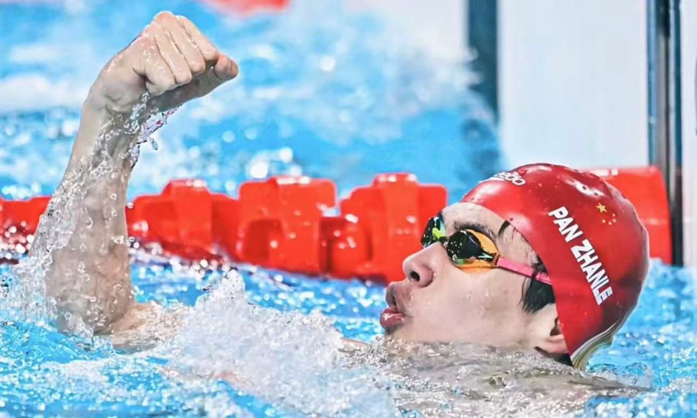

| 排名 | 国家/地区 | 金牌 | 银牌 | 铜牌 | 总计 |
|---|---|---|---|---|---|
| 1 | 美国 | 40 | 44 | 42 | 126 |
| 2 | 中国 | 38 | 32 | 18 | 88 |
| 3 | 日本 | 27 | 14 | 17 | 58 |
| 4 | 英国 | 22 | 21 | 22 | 65 |
| 5 | 俄罗斯 | 20 | 28 | 23 | 71 |
| 6 | 澳大利亚 | 17 | 7 | 22 | 46 |
全红婵在巴黎奥运会女子 10 米跳台决赛中，以 425.60 分的总成绩战胜队友陈芋汐成功卫冕，成为该项目奥运连冠第三人，助力中国跳水队实现该项目五连冠，更推动 “梦之队” 包揽本届奥运会全部八枚跳水金牌。

潘展乐在巴黎奥运会男子 100 米自由泳决赛中，以 46 秒 40 的成绩夺得金牌并打破世界纪录，成为中国、亚洲历史上首位该项目奥运冠军，打破了欧美选手的长期垄断。
谢瑜在巴黎奥运会男子 10 米气手枪决赛中，以 240.9 环的总成绩夺得金牌，这是中国选手时隔 16 年再度斩获该项目奥运冠军。这位 24 岁的小将凭借沉稳的心态和专注的发挥，征服了所有裁判和观众，展现了历经多年磨砺的技术实力和超强抗压能力。
刘洋在巴黎奥运会男子竞技体操吊环决赛中，以 15.300 分的成绩成功卫冕，成为中国首位该项目奥运卫冕冠军，也是奥运会历史上第三位两夺男子吊环金牌的运动员，携手队友邹敬园包揽金银牌，延续中国队在该项目的统治地位。